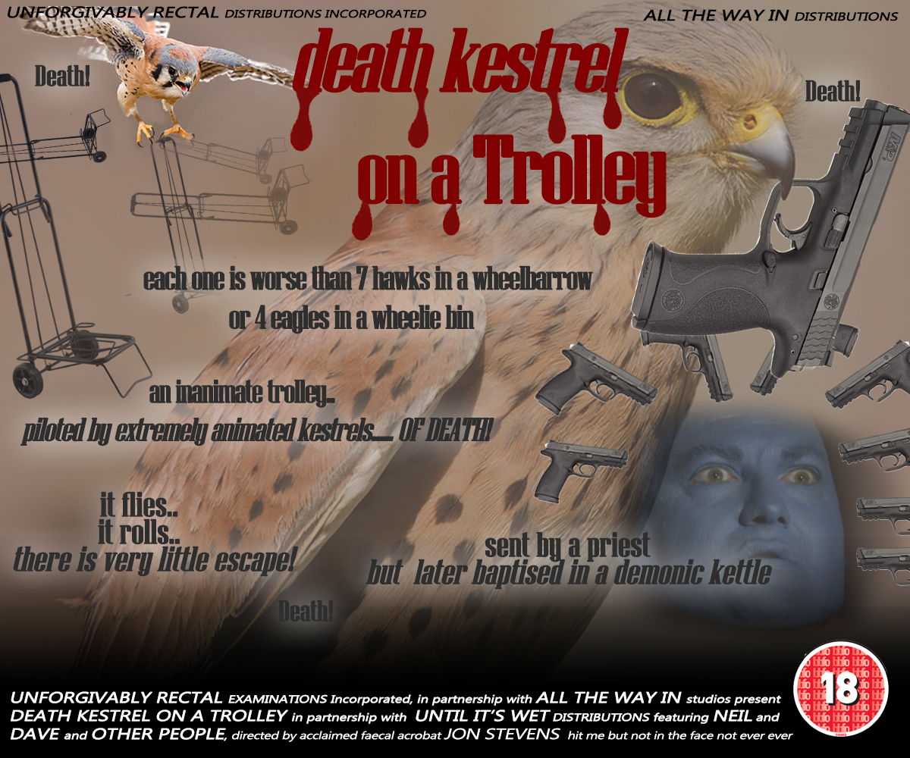
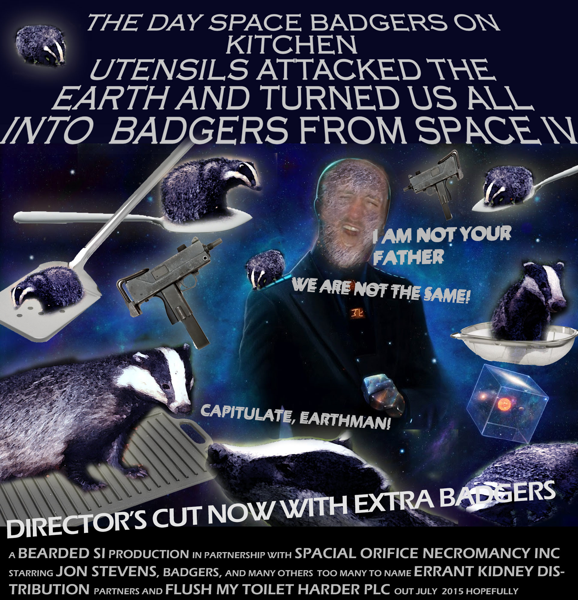
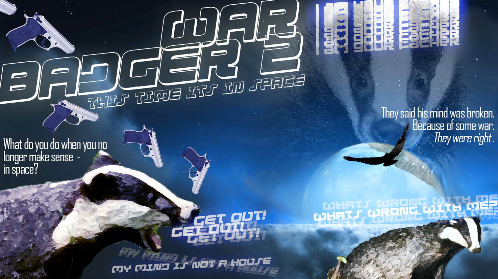
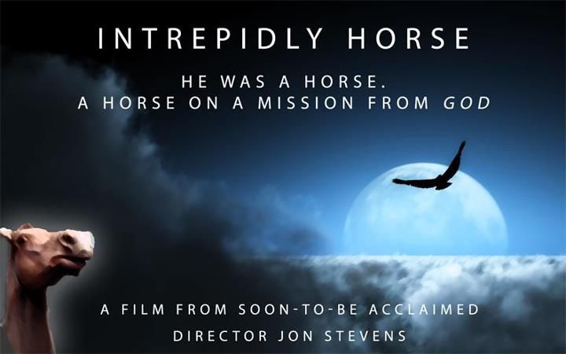
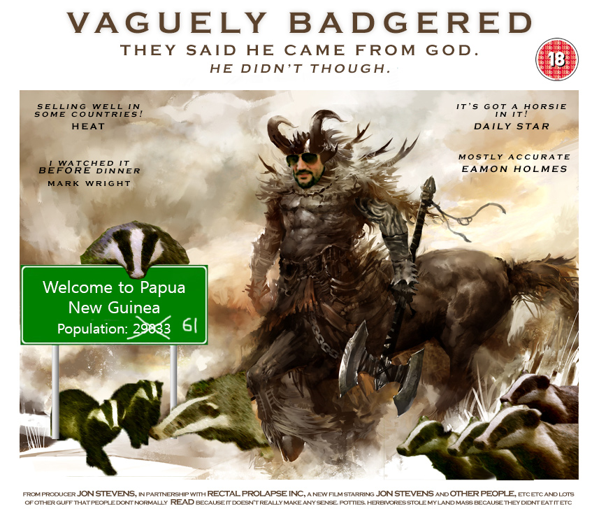
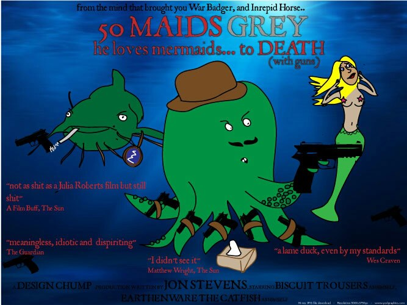
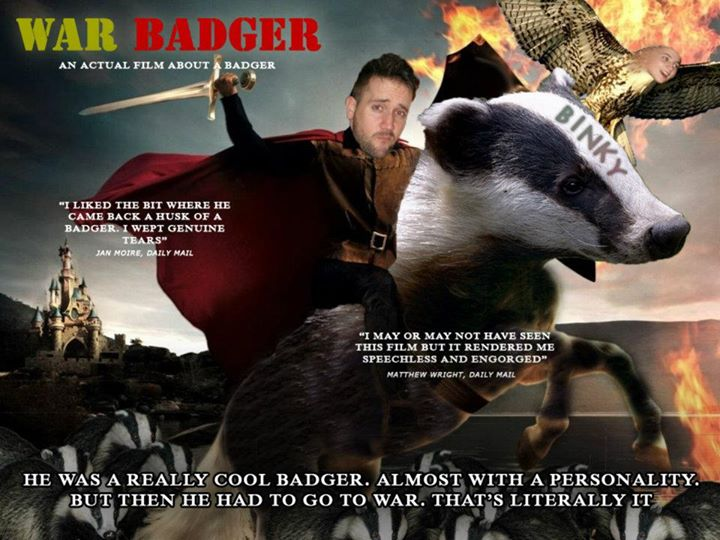

Something Happens: A New Generic Film
Starring Slightly Funny People and Slightly Attractive Woman.

CATNABBED
THEY TOOK THE WRONG GUY'S CAT!

Death Kestrel on a Trolley
blib blob blib blob blib
Space Badgers
In the early 90s I spent a few years living in Borundi. While I was there I came accross a rare species of badger called the Space Badger (rough translation). The space badger comes in all different sizes, and is different from the common badger in that it reproduces but laying eggs. This discovery, and the consumption of fourteen pints of the local home brew together inspired me to have a fitful night's sleep, and a fearsome dream that lasted over nine hours. I dedicated the next decade of my life to turning this dream into a film.
War badger 2
The hugely anticipated sequel to War Badger sees our hero try to rebuild his life after the terrible bit of war that he was near in the last film. An interesting analysis of
Intrepid Horse
A beautiful story about a horse that was sent from God to deliver a message to the stupid two-legged people.
Vaguely Badgered
A film that based solely on a troubling dream that awoke me one night.
50 Maids Grey
An adaptation of my 50 Maids story, with extra octopii (octopussay? Octopusssess?)
War Badger
A deeply moving and troubling portrayal of what happens when badgers are sent to war. Wars they don't believe in.
